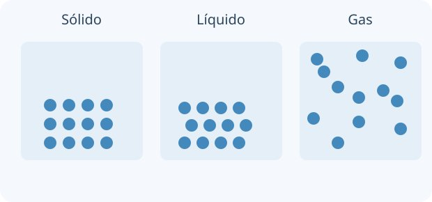

Empezá eligiendo qué parte del mundo vas a estudiar: ese es tu sistema. Una propiedad es algo que podés describir o medir. Para comparar materiales, no alcanza con decir que uno es «más pesado»: necesitás especificar masa, volumen y condiciones.

Modelo de partículas: cambia su organización y separación. Los puntos no son poros ni gotas visibles.
La química relaciona lo que observamos con modelos de partículas. Una sustancia tiene composición definida; una mezcla tiene composición variable. O₂ es una sustancia simple de atomicidad 2; H₂O es compuesta. El aire es una mezcla, aunque se vea uniforme.
Masa y volumen son extensivas: aumentan al reunir muestras. Densidad y temperatura son intensivas. El peso es una fuerza, P = mg; el peso específico es peso/volumen, no masa/volumen. En el SI se usan kg, m³, K y Pa. La química orgánica estudia principalmente compuestos del carbono; CO₂ y carbonatos se tratan habitualmente como inorgánicos.
ρ = m/V · T(K) = t(°C) + 273,15
TU TURNO · INTENTÁ RESOLVER ANTES DE MIRAR
Una pieza tiene m = 54 g y V = 20 cm³.
Tu desafío: Calculá la densidad de la pieza y predecí qué pasará con ella al partir la pieza por la mitad.
Ver el ejemplo resuelto paso a paso
ρ = 54/20 = 2,7 g/cm³ = 2700 kg/m³.
Al partirla por la mitad cambian m y V; la densidad permanece igual si el material es uniforme.
LECCIÓN 2 / 4 · LEÉ, RESOLVÉ Y COMPROBÁ
Fases, soluciones y separación
Empezá desde la idea.
Imaginá una lupa que te permite distinguir regiones uniformes. Cada región es una fase, mientras que una sustancia describe composición química. Disolver sal distribuye sus iones en el agua: dejan de verse granos, pero el soluto sigue presente.
Una fase es una región uniforme con propiedades propias. Agua y aceite forman dos fases; agua con sal completamente disuelta forma una. Sustancia y fase no son sinónimos: dos líquidos miscibles pueden compartir fase.
La filtración retiene partículas insolubles; la evaporación recupera un soluto no volátil y la destilación permite recuperar también el solvente. Una solución saturada está en equilibrio con soluto sin disolver a esa temperatura; sobresaturada contiene más soluto disuelto que el equilibrio y es inestable. Disolver no implica siempre una reacción química.
Mezcla → separar según tamaño, solubilidad o volatilidad
TU TURNO · INTENTÁ RESOLVER ANTES DE MIRAR
Hay arena, sal y agua en un vaso.
Tu desafío: Proponé una secuencia para recuperar arena y sal por separado. Justificá qué propiedad aprovecha cada paso.
Ver el ejemplo resuelto paso a paso
Filtrá: la arena queda en el papel; la sal atraviesa disuelta en el filtrado.
Evaporá el agua del filtrado para recuperar sal; no filtres esperando retener sus iones.
LECCIÓN 3 / 4 · LEÉ, RESOLVÉ Y COMPROBÁ
Partículas y transformaciones
Empezá desde la idea.
Una partícula no es un pedacito visible de la muestra: es una entidad del modelo, como un átomo, molécula o ion. Primero preguntá si cambió su organización o su identidad. Después analizá de dónde viene y adónde va la energía.
En un sólido las partículas oscilan alrededor de posiciones; en un líquido conservan proximidad y pueden desplazarse; en un gas están muy separadas. Fundir o hervir cambia la organización, no la identidad química. A presión fija una sustancia pura presenta temperaturas características de cambio de estado.
Una reacción reorganiza átomos y produce especies nuevas. En una combinación se unen reactivos; en una descomposición un compuesto origina sustancias más simples. Un proceso endotérmico absorbe energía del entorno; uno exotérmico la entrega. El punto de ebullición cambia con la presión externa.
Tu desafío: Explicá qué cambia antes y durante la fusión y si se transforma la identidad de las moléculas.
Ver el ejemplo resuelto paso a paso
Primero aumenta su temperatura; durante la fusión de una muestra pura coexisten sólido y líquido.
El calor de fusión cambia las interacciones entre partículas, no convierte las moléculas en H₂ y O₂.
LECCIÓN 4 / 4 · LEÉ, RESOLVÉ Y COMPROBÁ
Del núcleo a la tabla periódica
Empezá desde la idea.
Un átomo tiene un núcleo pequeño con protones y neutrones y una región electrónica mucho más extensa. El número de protones identifica al elemento. Cambiar electrones modifica la carga; cambiar neutrones modifica el isótopo, sin crear otro elemento.
El número atómico Z cuenta protones y define el elemento. A cuenta protones y neutrones. Isótopos de un elemento tienen igual Z y distinto A. Un catión perdió electrones; un anión los ganó. El modelo de Bohr organiza electrones por capas, pero no describe con precisión todos los átomos.
En la tabla, los períodos se relacionan con capas ocupadas y los grupos principales con electrones de valencia. Los metales suelen conducir y formar cationes; los no metales muestran otras tendencias. Mendeleiev ordenó propiedades periódicas antes de conocerse Z; la ley moderna las relaciona con el número atómico.
Neutrones = A − Z · Electrones de un ion = Z − carga algebraica
TU TURNO · INTENTÁ RESOLVER ANTES DE MIRAR
Para ²³Na⁺, Z = 11.
Tu desafío: Determiná protones, neutrones y electrones del ion. Explicá qué indica su carga.
Ver el ejemplo resuelto paso a paso
Tiene 11 protones y 23 − 11 = 12 neutrones.
La carga +1 indica 10 electrones; el núcleo no cambió al ionizarse.
02
PREDECÍ · INVESTIGÁ · EXPLICÁ
La química en tus manos.
Cargando la mesa de trabajo…
03
LISTO PARA PONER A PRUEBA TU COMPRENSIÓN
Repasá y encontrá qué volver a estudiar.
Ocho preguntas por unidad, con explicación y enlace a la lección correspondiente. Estos resultados se guardan únicamente en este navegador; no se envían al panel docente.